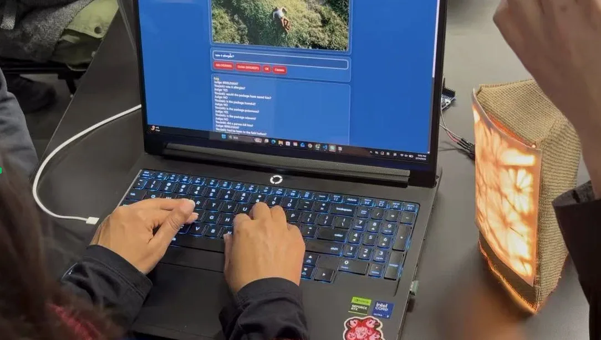
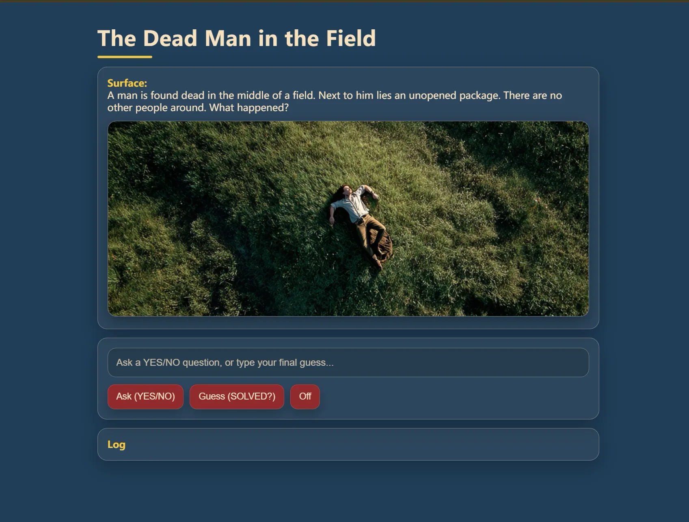

We turned a desk lamp into the host of a Turtle Soup puzzle, a lateral-thinking game where you can only ask yes/no questions. An LLM judges each question and the lamp answers in light: green for yes, red for no, dark for irrelevant, and a white blink when you crack the case. A camera wakes it up when someone walks by.
Web version: keyword rules stand in for the LLM, so ask in English, e.g. “Did he fall?”. The real lamp asks GPT-4o-mini, then an Arduino drives a WS2812B LED strip over serial.

